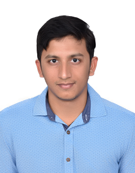

MyResume
Siddi Ganesh Jagatap

Education
-
M-Tech, Production Engineering - Sri Venkateshwara University, Tirupati (2016-2018)
-
B-Tech, Mechanical Engineering - Rajeev Gandhi Memorial College of Engineering and Technology, Nandyal (2011-2015)
Work Experience
-
Optum Global Solutions - 16th Dec 2022 to Present
-
Working as Senior Software Engineer currently
-
Infosys - 10th March 2019 to 15th Dec 2022
-
Technology Analyst (11th Dec 2021 - 15th Dec 2021)
-
Senior Systems Engineer (03rd Mar 2021 - 10th Dec 2021)
-
Systems Engineer (26th Aug 2019 - 03rd Mar 2021)
-
Engineering Trainee (10th Mar 2019 - 26th Aug 2019)
Skills
Programming languages
- Python
- Java
- TypeScript
- Solidity
- C#
Database
- MySQL
- Oracle SQL
- MongoDB
- Kusto Query language
Azure Cloud
Awards and Certification
-
Recieved many Diamond recognition awards for my contribution in developing Chatbot in the OGS organisation
-
Recieved Blockchain Developer tag in Infosys organisation for my contribution in developing a NFT platform
Others